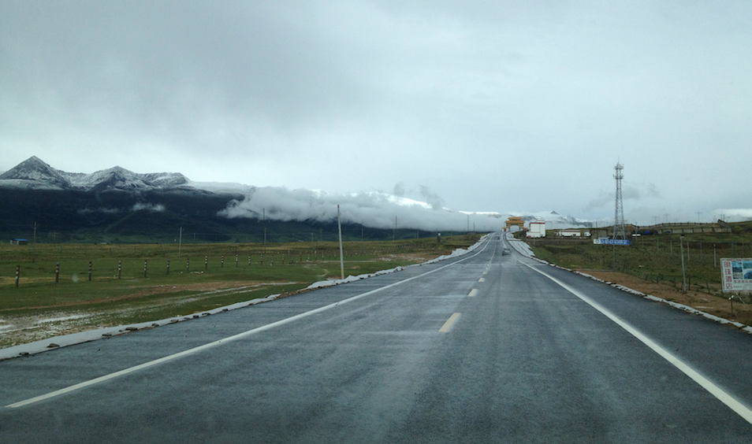
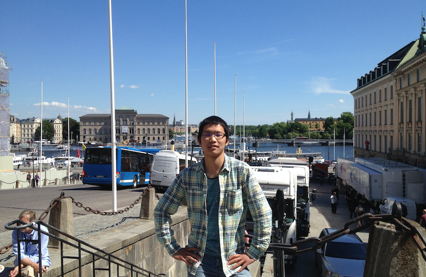
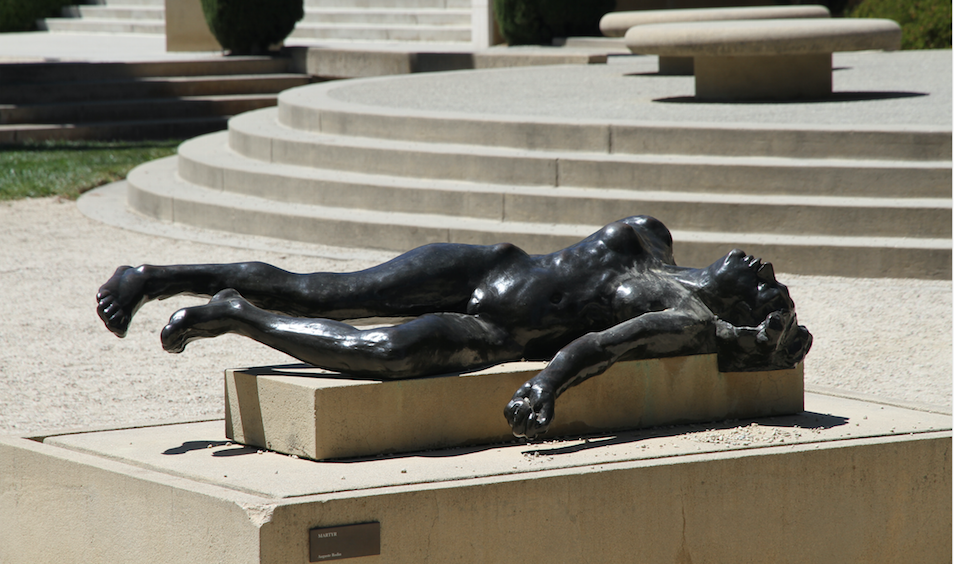

My Photos
-

Tibet
July 20, 2013Tibet, with abundant natural and cultural resources, is always a charming mysterious land that attracted me to explore.
-

Stockholm
May 25, 2013Stockholm is unique in that it's built on islands and surrounded by water, so you get this enormous sense of freedom.
-

Rodin Sculpture Garden in Stanford U
July 10, 2012As world academic institute, Stanford give me a sense of peace, busy and fight with most challenge problems for human being.